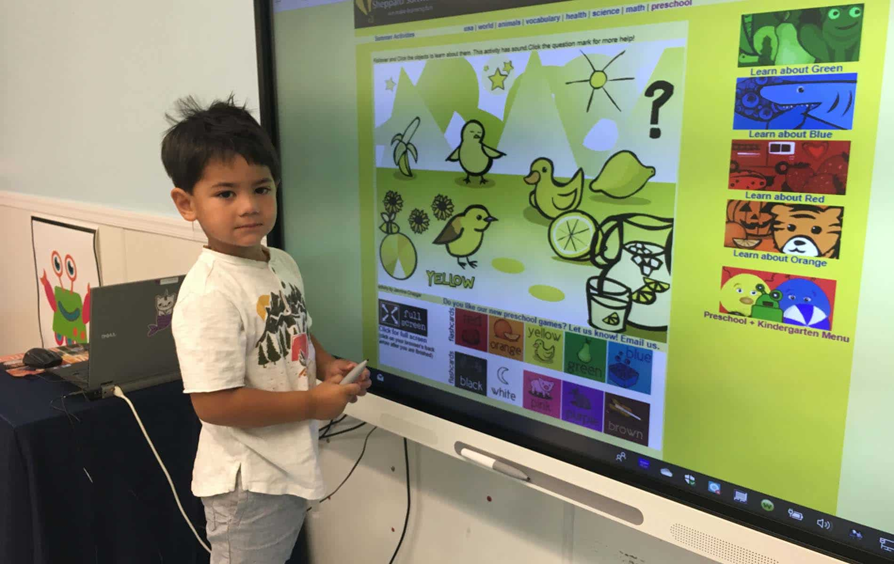

Præsenter kort artiklen "Etnography in the Kindergarten" - herunder hvordan etnografi kan understøtte design af nye teknologier til børnehaven.
Involverede 30 børnehave børn
i alderen tre til fem år
Underviserne var også involveret
12 timers observation
Videnskab der beskæftiger sig med menneskers kultur og sociale liv, som det sker
Rolige aktiviteter
Legeaktiviteter
Artistiske aktiviteter
Udvikling af teknologier der indgår i kulturen og de sociale relationer
